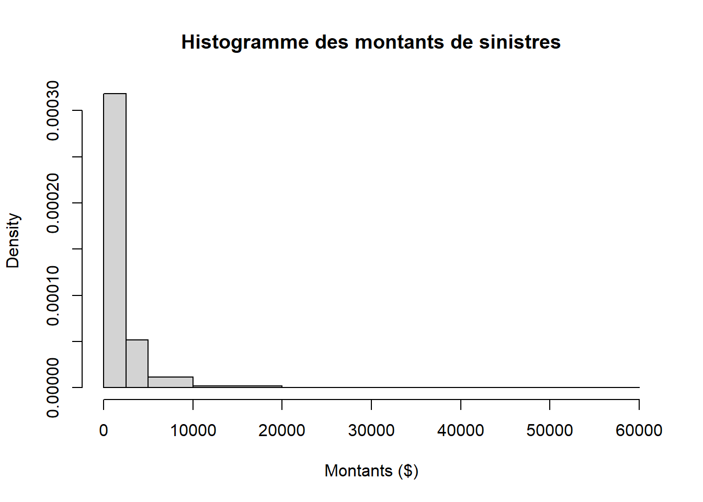
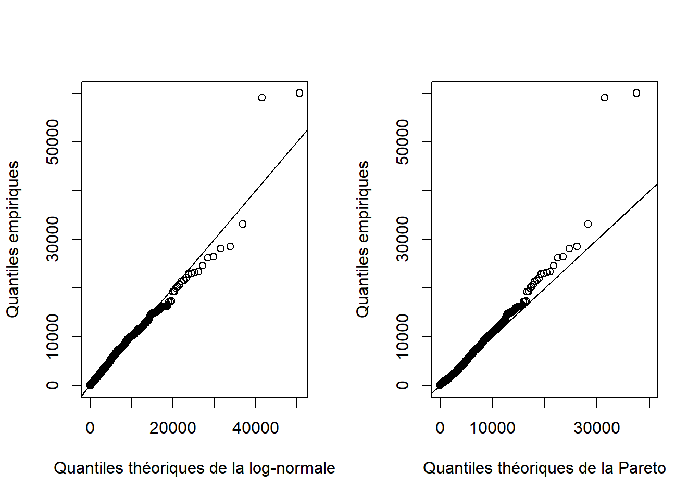
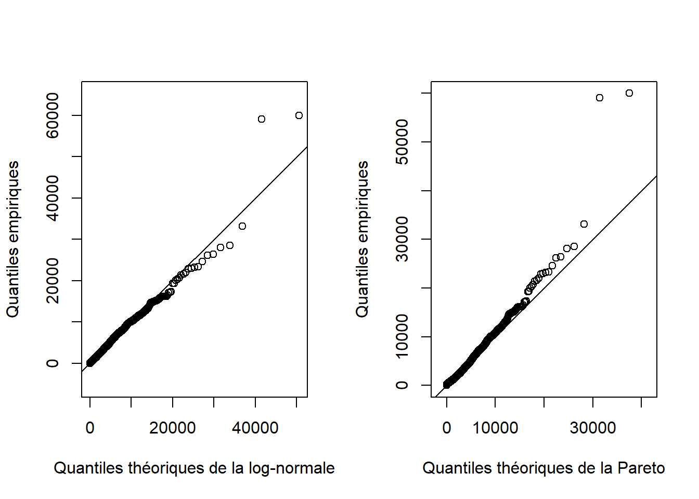

| x |
|---|
| 1 |
| 1 |
| 1 |
| 1 |
| 1 |
| 2 |
| 2 |
| 3 |
| 3 |
| 4 |
| 6 |
| 6 |
| 8 |
| 10 |
| 13 |
| 14 |
| 15 |
| 18 |
| 22 |
| 25 |
4 Ajustement de modèles
4.1 Estimateur des moments pour plusieurs distributions
Soit \(X_1, \dots, X_n\) un échantillon aléatoire issu des distributions ci-dessous. Dans chaque cas, trouver l’estimateur du paramètre \(\theta\) à l’aide de la méthode des moments.
a) \(f(x; \theta) = \theta^x e^{-\theta}/x!\), \(x = 0, 1, \dots\), \(\theta > 0\).
b) \(f(x; \theta) = \theta x^{\theta - 1}\), \(0 < x < 1\), \(\theta > 0\).
c) \(f(x; \theta) = \theta^{-1} e^{-x/\theta}\), \(\theta > 0\).
d) \(f(x; \theta) = e^{-|x - \theta|}/2\), \(-\infty < x < \infty\), \(-\infty < \theta < \infty\).
e) \(f(x; \theta) = e^{-(x - \theta)}\), \(x \geq \theta\), \(\theta > 0\).
NoteÉléments de réponse
a) \(\bar{X}\)
b) \(\bar{X}/(1 - \bar{X})\)
c) \(\bar{X}\)
d) \(\bar{X}\)
e) \(\bar{X} - 1\)
AstuceSolution complète
a) On a une une distribution de Poisson de paramètre \(\theta\), d’où \(\esp{X} = \theta\). L’estimateur des moments est donc \(\hat{\theta} = \bar{X}\).
b) La densité est celle d’une distribution bêta de paramètres \(\theta\) et \(1\). Ainsi, \(\esp{X} = \theta/(\theta + 1)\) et en posant \[ \frac{\theta}{\theta + 1} = \bar{X} \] on trouve que l’estimateur des moments de \(\theta\) est \[ \hat{\theta} = \frac{\bar{X}}{1 - \bar{X}}. \]
c) On reconnaît la densité d’une distribution Gamma de paramètres \(1\) et \(\theta\). Ainsi, on sait que \(\esp{X} = \theta\), d’où l’estimateur des moments est \(\hat{\theta} = \bar{X}.\)
d) Cette densité est celle de la loi de Laplace. On remarque d’abord que \[ \begin{aligned} -|x - \theta| &= \begin{cases} -x + \theta &\text{pour} \; x \geq \theta \\ x - \theta &\text{pour} \; x \leq \theta \\ \end{cases}. \end{aligned} \] Ainsi, on divise l’intégrale en deux selon les cas pour la valeur absolue: \[ \begin{aligned} \esp{X} &= \frac{1}{2} \left( \int_{-\infty}^\theta x e^{x-\theta} dx + \int_{\theta}^\infty xe^{-x + \theta} dx \right). \end{aligned} \] On intègre ensuite par parties pour obtenir \[ \begin{aligned} \esp{X} &= \frac{1}{2} \left( \left[x e^{x - \theta} \right]_{-\infty}^{\theta} - \int_{-\infty}^\theta e^{x-\theta} dx - \left[ x e^{-x + \theta} \right]_{\theta}^{\infty} + \int_{\theta}^\infty e^{-x + \theta} dx \right) \\ &= \frac{1}{2}(2\theta)\\ &= \theta. \end{aligned} \] L’estimateur des moments de \(\theta\) est donc \(\hat{\theta} = \bar{X}\).
e) On a la densité d’une exponentielle de paramètre 1 translatée de \(\theta\) vers la droite. Par conséquent, \(\esp{X} = \theta + 1\), un résultat facile à vérifier en intégrant. En posant \(\theta + 1 = \bar{X}\), on trouve facilement que \(\hat{\theta} = \bar{X} - 1\).
4.2 Moments - Loi log-normale
Si \(Z\sim \mathcal{N}(\mu,\sigma^2)\) et \(Y=e^{Z}\), alors \(Y\) a une distribution log-normale avec paramètres \(\mu\) et \(\sigma^2\). La fonction de répartition est \[ F(y)=\Phi\left(\frac{\ln(y)-\mu}{\sigma}\right), \quad y>0, \] où \(\Phi\) est la fonction de répartition de la loi normale standard.
a) Utiliser la fonction génératrice des moments de la loi normale pour montrer que les deux premiers moments de la loi log-normale sont \[ \ex[Y]=e^{\mu+\sigma^2/2}\quad \text{ et } \ex[Y^2]=e^{2\mu+2\sigma^2}. \]
b) Utiliser la méthode des moments pour construire un estimateur de \(\mu\) et \(\sigma^2\) si \(Y_1, \ldots, Y_n\) forment un échantillon aléatoire d’une loi log-normale.
c) Montrer que les estimateurs trouvés en (b) sont convergents.
NoteÉléments de réponse
- \(\hat \mu = \ln\left\{\frac{\bar Y_n^2}{\sqrt{\frac{1}{n}\sum_{i=1}^n Y_i^2}} \right\}\) et \(\hat\sigma^2 = \ln\left\{\frac{\frac{1}{n}\sum_{i=1}^n Y_i^2}{\bar Y_n^2} \right\}\)
AstuceSolution complète
a) La fonction génératrice des moments de \(Z\sim\mathcal{N}(\mu,\sigma^2)\) est \[ M_{Z}(t)=\ex[e^{tZ}]=\exp(\mu t +\sigma^2 t^2/2). \] Ainsi, \[ \begin{aligned} \ex[Y]&= \ex[e^{Z}]=M_Z(1)=\exp(\mu +\sigma^2/2),\\ \ex[Y^2]&= \ex[e^{2Z}]=M_Z(2)=\exp(2\mu +\sigma^2 2^2/2). \end{aligned} \]
b) On doit résoudre les deux équations où \(m_1=\bar Y_n\) est égal à \(\ex[Y]\) et \(m_2=\frac{1}{n}\sum_{i=1}^n Y_i^2\) est égal à \(\ex[Y^2]\): \[ \begin{aligned} \exp(\hat\mu +\hat\sigma^2/2)&=\bar Y_n \\ \exp(2\hat\mu +2\hat\sigma^2 )&=\frac{1}{n}\sum_{i=1}^n Y_i^2. \end{aligned} \] On note que \[ \begin{aligned} \exp(2\hat\mu +2\hat\sigma^2 )&=\left\{\exp(\hat\mu +\hat\sigma^2/2)\right\}^2\exp(\hat\sigma^2)\\ &=\bar Y_n^2 \exp(\hat\sigma^2).\quad \end{aligned} \] On obtient que \[ \bar{Y}_n^2 \exp(\hat\sigma^2) = \frac{1}{n}\sum_{i=1}^n Y_i^2 \] est équivalent à \[ \hat\sigma^2 = \ln\left\{\frac{\sum_{i=1}^n Y_i^2/n}{\bar{Y}_n^2} \right\}. \] Ainsi, \(\hat\mu +\hat\sigma^2/2=\ln(\bar Y_n )\), donc \[ \begin{aligned} \hat\mu & = \ln(\bar Y_n )-\frac{1}{2}\ln\left\{\frac{\frac{1}{n}\sum_{i=1}^n Y_i^2}{\bar Y_n^2} \right\}\\ & = \ln(\bar Y_n )+\ln\left\{\frac{\bar Y_n}{\sqrt{\frac{1}{n}\sum_{i=1}^n Y_i^2}} \right\}\\ & = \ln\left\{\frac{\bar Y_n^2}{\sqrt{\frac{1}{n}\sum_{i=1}^n Y_i^2}} \right\}. \end{aligned} \] Ainsi, les estimateurs des moments sont \[ \hat \mu = \ln\left\{\frac{\bar Y_n^2}{\sqrt{\frac{1}{n}\sum_{i=1}^n Y_i^2}} \right\} \quad \text{ et }\quad \hat\sigma^2 = \ln\left\{\frac{\frac{1}{n}\sum_{i=1}^n Y_i^2}{\bar Y_n^2} \right\}. \]
c) Pour montrer la convergence, on note premièrement que, selon la Loi faible des grands nombres \[ \begin{aligned} \bar Y &\stackrel{P}{\rightarrow} \ex[Y]=e^{\mu+\sigma^2/2}\\ \frac{1}{n}\sum_{i=1}^n Y_i^2 &\stackrel{P}{\rightarrow} \ex[Y^2]=e^{2\mu+2\sigma^2}\\ \end{aligned} \] Puisque \(\ln\), le carré et la racine carrée sont toutes des fonctions continues, on trouve que, quand \(n\to\infty\), \[ \begin{aligned} \hat\mu = \ln\left\{\frac{\bar Y_n^2}{\sqrt{\frac{1}{n}\sum_{i=1}^n Y_i^2}} \right\} &\stackrel{P}{\rightarrow} \ln\left\{\frac{ e^{2\mu+\sigma^2}}{\sqrt{e^{2\mu+2\sigma^2}}} \right\}=\ln\left\{ e^{2\mu+\sigma^2-\mu-\sigma^2} \right\}=\mu\\ \hat\sigma^2 = \ln\left\{\frac{\frac{1}{n}\sum_{i=1}^n Y_i^2}{\bar Y_n^2} \right\} &\stackrel{P}{\rightarrow} \ln\left\{\frac{e^{2\mu+2\sigma^2}}{e^{2\mu+\sigma^2}} \right\}=\ln\left\{e^{2\mu+2\sigma^2-2\mu-\sigma^2} \right\}=\sigma^2. \end{aligned} \] Ainsi, les estimateurs sont convergents.
4.3 Moments - Loi géométrique
Considérer la distribution géométrique avec fonction de masse de probabilité \[ \prob{X = x} = \theta (1 - \theta)^x, \quad x = 0, 1, \dots. \] On a obtenu l’échantillon aléatoire suivant de cette distribution:Utiliser la méthode des moments pour obtenir une estimation ponctuelle du paramètre \(\theta\).
NoteÉléments de réponse
\(0,2381\).
AstuceSolution complète
Pour obtenir l’estimateur des moments de \(\theta\), on pose \[ \esp{X} = \frac{1 - \theta}{\theta} = \bar{X}, \] d’où \[ \hat{\theta} = \frac{1}{\bar{X} + 1}. \] La moyenne de l’échantillon est \(\bar{x} = 64/20 = 3,2\). On a donc \[ \hat{\theta} = \frac{1}{4,2} = 0,2381. \]
4.4 Un dé régulier mais spécial
On a un dé régulier avec \(\theta\) faces numérotées de \(1\) à \(\theta\), où \(\theta\) est un entier inconnu. Soit \(X_1, \dots, X_n\) un échantillon aléatoire composé de \(n\) lancers de dés indépendants.
a) Déterminer l’estimateur des moments de \(\theta\).
b) Calculer l’estimateur des moments de \(\theta\) si \(n = 4\) et \(x_1 = x_2 = x_3 = 3\) et \(x_4 = 12\). Interpréter le résultat.
NoteÉléments de réponse
a) \(\hat{\theta} = 2 \bar{X} - 1\)
b) \(9,5\)
AstuceSolution complète
a) Il s’agit ici de trouver l’estimateur des moments du paramètre \(\theta\) d’une distribution uniforme discrète sur \(1, 2, \dots, \theta\), c’est-à-dire que \(\prob{X = x} = 1/\theta\) pour \(x = 1, \dots, \theta\). En posant \[ \begin{aligned} \esp{X} = \sum_{x=1}^{\theta} x \prob{X = x} = \frac{1}{\theta} \sum_{x = 1}^{\theta} x = \frac{\theta (\theta + 1)}{2 \theta} = \frac{\theta + 1}{2} = \bar{X}_n, \end{aligned} \] on trouve facilement que l’estimateur des moments de \(\theta\) est \(\hat{\theta} = 2 \bar{X} - 1\).
b) Avec \(x_1 = x_2 = x_3 = 3\) et \(x_4 = 12\), on a \(\hat{\theta} = 2 (3 + 3 + 3 + 12)/4 - 1 = 9,5\). Or, cet estimateur est absurde puisque, en ayant roulé le résultat 12, on sait qu’il y a au moins douze faces sur le dé! En d’autres termes, \(9,5\) est une valeur de \(\theta\) impossible. On constate que l’estimateur obtenu à l’aide de la méthode des moments n’est pas toujours un estimateur possible.
4.5 Quantiles - Loi log-normale
Soit \(X_1, \dots, X_n\) un échantillon aléatoire tiré d’une distribution log-normale. Les 20e et 80e quantiles empiriques sont respectivement de \(\hat{\pi}_{0,20} = 18,25\) et \(\hat{\pi}_{0,80} = 35,8\). Estimer les paramètres de la distribution en utilisant la méthode des quantiles, puis utiliser ces estimations pour estimer la probabilité d’observer une valeur excédant 30.
NoteÉléments de réponse
\(\hat{\mu}=3,241\), \(\hat{\sigma}=0,4\) et \(\widehat{\Pr(X>30)}= 0,3446\)
AstuceSolution complète
Les équations à résoudre sont \[ \begin{aligned} 0,2 &= F(18,25) = \Phi\left(\frac{\ln(18,25)-\hat{\mu}}{\hat{\sigma}}\right), \\ 0,8 &= F(35,8) = \Phi\left(\frac{\ln(35,8)-\hat{\mu}}{\hat{\sigma}}\right). \end{aligned} \] Les 20e et 80e quantiles de la loi normale standard sont -0,842 et 0,842, respectivement. Les équations deviennent \[ \begin{aligned} -0,842 &= \frac{2,904-\hat{\mu}}{\hat{\sigma}}, \\ 0,842 &= \frac{3,578-\hat{\mu}}{\hat{\sigma}}. \end{aligned} \] Diviser la première équation par la deuxième donne \[ -1 = \frac{2,904-\hat{\mu}}{3,578-\hat{\mu}}. \] La solution est \(\hat{\mu}=3,241\) et \(\hat{\sigma}=0,4\). La probabilité d’excéder 30 est estimée par \[ \begin{aligned} \widehat{\Pr(X>30)} &= 1-F(30; \hat\mu,\hat\sigma) = 1-\Phi\left(\frac{\ln(30)-3,241}{0,4}\right) = 1-\Phi(0,4) \\ &= 1-0,6554 = 0,3446. \end{aligned} \]
4.6 Quantiles - Loi log-logistique
Un échantillon aléatoire de réclamations est tiré d’une distribution log-logistique avec fonction de répartition \[ F(x)=\frac{(x/\theta)^\tau}{1+(x/\theta)^\tau}, \quad x>0, \theta >0, \tau >0. \] Dans l’échantillon, 80% des réclamations excèdent 100 et 20% des réclamations excèdent 400. Estimer les paramètres \(\theta\) et \(\tau\) par la méthode des quantiles.
NoteÉléments de réponse
\(\hat{\tau}=2\) et \(\hat{\theta}=200\)
AstuceSolution complète
Les équations à résoudre sont \[ \begin{aligned} 0,2 &= F(100) = \frac{(100/\hat{\theta})^{\hat{\tau}}}{1+(100/\hat{\theta})^{\hat{\tau}}}, \\ 0,8 &= F(400) = \frac{(400/\hat{\theta})^{\hat{\tau}}}{1+(400/\hat{\theta})^{\hat{\tau}}}. \end{aligned} \] Avec la première équation, on obtient \[ 0,2=0,8(100/\hat{\theta})^{\hat{\tau}} \text{ ou encore } \hat{\theta}^{\hat{\tau}}=4(100)^{\hat{\tau}}. \] En insérant le résultat dans la deuxième équation, on obtient \[ 0,8 = \frac{\frac{400^{\hat{\tau}}}{\hat{\theta}^{\hat{\tau}}}}{1+\frac{400^{\hat{\tau}}}{\hat{\theta}^{\hat{\tau}}}} =\frac{\frac{(4 \times 100)^{\hat{\tau}}}{(4 \times (100)^{\hat{\tau}})}}{1+\frac{(4 \times 100)^{\hat{\tau}}}{(4 \times (100)^{\hat{\tau}})}} = \frac{4^{\hat{\tau}-1}}{1+4^{\hat{\tau}-1}}. \] On résoud pour obtenir \(\hat{\tau}=2\) et \(\hat{\theta}=200\).
4.7 20 pertes sur un an
Les 20 pertes suivantes (en millions de dollars) ont été enregistrées sur une période d’un an:
Déterminer le 75e quantile empirique par la méthode des quantiles empiriques lissés.
NoteÉléments de réponse
13,75
AstuceSolution complète
On a besoin de la \(0,75(21)=15,75\)e plus petite observation. On obtient \(0,25(13) + 0,75(14)= 13,75\).
4.8 Estimateur du maximum de vraisemblance pour plusieurs distributions
Trouver l’estimateur du maximum de vraisemblance du paramètre \(\theta\) de chacune des distributions de l’exercice 4.1.
NoteÉléments de réponse
a) \(\bar{X}\)
b) \(-n/\ln(X_1 \cdots X_n)\)
c) \(\bar{X}\)
d) \(\text{med}(X_1, \dots, X_n)\)
e) \(X_{(1)}\)
AstuceSolution complète
Dans tous les cas, la fonction de vraisemblance est \(L(\theta) = \prod_{i = 1}^n f(x_i; \theta)\) et la fonction de log-vraisemblance est \(l(\theta) = \ln L(\theta) = \sum_{i = 1}^n \ln f(x_i; \theta)\). L’estimateur du maximum de vraisemblance du paramètre \(\theta\) est la solution de l’équation \(l^\prime(\theta) = 0\).
a) On a \[ \begin{aligned} L(\theta) &= \frac{e^{-n\theta} \theta^{\sum_{i=1}^n x_i}}{% \prod_{i=1}^n x_i!}, \\ l(\theta) &= -n \theta + \sum_{i = 1}^n x_i \ln(\theta) - \sum_{i=1}^n \ln(x_i!) \\ \text{et} \quad l^\prime(\theta) &= -n + \frac{\sum_{i = 1}^n x_i}{\theta}. \end{aligned} \]
et
\[ \begin{aligned} l^\prime(\theta) &= -n + \frac{\sum_{i = 1}^n x_i}{\theta}. \end{aligned} \] En résolvant l’équation \(l^\prime(\theta) = 0\) pour \(\theta\), on trouve que l’estimateur du maximum de vraisemblance est \(\hat{\theta} = \bar{X}\).
b) On a \[ \begin{aligned} L(\theta) &= \theta^n \left( \prod_{i = 1}^n x_i \right)^{\theta - 1}, \\ l(\theta) &= n \ln(\theta) + (\theta - 1) \sum_{i = 1}^n \ln(x_i) \\ \end{aligned} \]
et
\[ \begin{aligned} l^\prime(\theta) &= \frac{n}{\theta} + \sum_{i = 1}^n \ln(x_i). \end{aligned} \] On trouve donc que \[ \hat{\theta} = -\frac{n}{\sum_{i=1}^n \ln(X_i)} = -\frac{n}{\ln(X_1 \cdots X_n)}. \]
c) On a \[ \begin{aligned} L(\theta) &= \theta^{-n} e^{-\sum_{i=1}^n x_i/\theta}, \\ l(\theta) &= -n \ln(\theta) - \frac{\sum_{i=1}^n x_i}{\theta} \\ \end{aligned} \]
et
\[ \begin{aligned} l^\prime(\theta) &= -\frac{n}{\theta} + \frac{\sum_{i=1}^n x_i}{\theta^2}. \end{aligned} \] On obtient que \(\hat{\theta} = \bar{X}\).
d) On a \[ L(\theta) = \left( \frac{1}{2} \right)^n e^{-\sum_{i = 1}^n \abs{x_i - \theta}} \] La présence de la valeur absolue rend cette fonction non différentiable en \(\theta\). On remarque que la fonction de vraisemblance sera maximisée lorsque l’expression \(\sum_{i=1}^n \abs{x_i - \theta}\) sera minimisée. On établit donc que \(\hat{\theta} = \text{med}(X_1, \dots, X_n)\), puisqu’on connaît le résultat suivant sur la médiane. En général, si \(X\) est une variable aléatoire continue et \(a\) est une constante, on peut trouver le minimum de \[ \begin{aligned} \esp{\abs{X - a}} &= \int_{-\infty}^\infty \abs{x - a} f(x) dx \\ &= \int_{-\infty}^a (a - x)f(x) dx + \int_a^\infty (x - a)f(x) dx. \end{aligned} \] Or, \[ \begin{aligned} \frac{d}{da} \esp{\abs{X - a}} &= \int_{-\infty}^a f(x) dx + \int_a^\infty f(x) dx \\ &= F_X(a) - (1 - F_X(a)) \\ &= 2F_X(a) - 1 \end{aligned} \] Par conséquent, le minimum est atteint au point \(a\) tel que \(2F_X(a) - 1 = 0\), soit \(F_X(a) = 1/2\). Par définition, cette valeur est la médiane de \(X\).
e) On remarque que le support de la densité dépend du paramètre \(\theta\). La vraisemblance est \[ L(\theta) = e^{n\theta - \sum_{i=1}^n x_i}\prod_{i=1}^n\mathbf{1}(x_i>\theta) \] S’il y a une indicatrice qui est 0, alors la vraisemblance sera 0, elles doivent donc toutes être égales à 1 simultanément, ce qui est équivalent à \[ L(\theta) = e^{n\theta - \sum_{i=1}^n x_i}\mathbf{1}(\min(x_1,\ldots,x_n)>\theta). \] La fonction \(e^{n\theta - \sum_{i=1}^n x_i}\) est strictement croissante en fonction de \(\theta\), ce qui indique de choisir une valeur de \(\theta\) la plus grande possible. Par contre, on a la contrainte \(\min(x_1,\ldots,x_n)>\theta\), c’est-à-dire que \(\theta\) doit être plus inférieur ou égal à la plus petite valeur de l’échantillon. Par conséquent, \(\hat{\theta} = \min(X_1, \dots, X_n) = X_{(1)}\).
4.9 Maximum de vraisemblance pour une distribution exponentielle translatée
Soit \(X_1, \dots, X_n\) un échantillon aléatoire de la distribution exponentielle translatée avec fonction de répartition
\[ \begin{aligned} F(x; \mu, \lambda) &= 1 - e^{-\lambda (x - \mu)} \\ \end{aligned} \]
et densité
\[ \begin{aligned} f(x; \mu, \lambda) &= \lambda e^{-\lambda (x - \mu)}, \quad x \geq \mu, \end{aligned} \] où \(-\infty < \mu < \infty\) et \(\lambda > 0\).
a) Démontrer que la distribution exponentielle translatée est obtenue par la transformation \(X = Z + \mu,\) où \(Z \sim \text{Exponentielle}(\lambda)\) et \(\esp{Z} = \frac{1}{\lambda}\).
b) Calculer l’espérance et la variance de cette distribution.
c) Calculer les estimateurs du maximum de vraisemblance des paramètres \(\mu\) et \(\lambda\).
d) Simuler 100 observations d’une loi Exponentielle translatée de paramètres \(\mu = 1000\) et \(\lambda = 0,001\) à l’aide de la fonction rexp de R et de la transformation en a). Calculer des estimations ponctuelles de \(\mu\) et \(\lambda\) pour l’échantillon ainsi obtenu. Ces estimations sont-elles proches des vraies valeurs des échantillons? Répéter l’expérience plusieurs fois au besoin.
NoteÉléments de réponse
a) Démo
b) \(\esp{X} = \mu + \lambda^{-1}\), \(\var{X} = \lambda^{-2}\)
c) \(\hat{\mu} = X_{(1)}\), \(\hat{\lambda} = n/\sum_{i = 1}^n (X_i - X_{(1)})\)
AstuceSolution complète
a) On a \(X = Z + \mu\) où \(Z \sim \text{Exponentielle}(\lambda)\). Alors,
\[ \begin{aligned} F_X(x) &= \prob{Z + \mu \leq x}\\ &= F_Z(x - \mu) \\ &= 1 - e^{-\lambda (x-\mu)}, \quad x > \mu \\ \end{aligned} \]
et
\[ \begin{aligned} f_X(x) &= \lambda e^{-\lambda (x - \mu)}, \quad x > \mu. \end{aligned} \]
b) On a simplement
\[ \begin{aligned} \Esp{X} &= \Esp{Z + \mu}\\ &= \Esp{Z} + \mu\\ &= \frac{1}{\lambda} + \mu \end{aligned} \]
et
\[ \begin{aligned} \Var{X} &= \Var{Z + \mu}\\ &= \Var{Z}\\ &= \frac{1}{\lambda^2}. \end{aligned} \]
c) On a
\[ \begin{aligned} L(\mu,\lambda) &= \lambda^n e^{-\lambda\sum_{i=1}^n(x_i -\mu)}\prod_{i=1}^n\mathbf{1}(x_i\geq \mu)\\ l(\mu,\lambda) &= n\ln(\lambda) - \lambda\sum_{i=1}^n (x_i - \mu) +\log(\mathbf{1}\{\min(x_1,\ldots,x_n)\geq \mu\}) \\ \end{aligned} \]
et
\[ \begin{aligned} \frac{\partial l(\mu,\lambda)}{\partial \lambda} &= \frac{n}{\lambda} - \sum_{i=1}^n (x_i - \mu), \\ \end{aligned} \]
d’où
\[ \begin{aligned} \hat{\lambda} &= \frac{n}{\sum_{i=1}^n (x_i - \hat{\mu})}. \end{aligned} \]
On voit dans la fonction de vraisemblance que la fonction \(e^{-\lambda\sum_{i=1}^n(x_i -\mu)}\) est strictement croissante en fonction de \(\mu\). Ainsi, il faut prendre la valeur de \(\hat{\mu}\) la plus grande possible telle que \(\log(\mathbf{1}\{\min(x_1,\ldots,x_n)\geq \hat{\mu}\})=0\). On a donc
\[ \begin{aligned} \hat{\mu} &= x_{(1)} \\ \hat{\lambda} &= \frac{n}{\sum_{i=1}^n (x_i - x_{(1)})}. \end{aligned} \]
d) On a, par exemple, les résultats suivants pour une exponentielle translatée de paramètres \(\mu = \lambda^{-1} = 1000\):
Code
x <- rexp(100, rate = 0.001) + 1000
min(x) [1] 1030.522Code
100 / sum(x - min(x)) [1] 0.001042372Les estimations obtenues sont près des vraies valeurs des paramètres, même pour un relativement petit échantillon de taille 100.
4.10 Estimateur du maximum de vraisemblance non unique
Soient \(X_{(1)} < \dots < X_{(n)}\) les statistiques d’ordre d’un échantillon aléatoire tiré d’une distribution uniforme sur l’intervalle \([\theta - \frac{1}{2}, \theta + \frac{1}{2}]\), \(-\infty < \theta < \infty\). Démontrer que toute statistique \(T(X_1, \dots, X_n)\) satisfaisant l’inégalité \[ X_{(n)} - \frac{1}{2} \leq T(X_1, \dots, X_n) \leq X_{(1)} + \frac{1}{2} \] est un estimateur du maximum de vraisemblance de \(\theta\). Ceci est un exemple où l’estimateur du maximum de vraisemblance n’est pas unique.
NoteÉléments de réponse
Démo
AstuceSolution complète
Il est clair ici que, comme \(f(x;\theta) = 1\), on ne pourra pas utiliser la technique habituelle pour calculer l’estimateur du maximum de vraisemblance. Il faut d’abord déterminer l’ensemble des valeurs de \(\theta\) possibles selon l’échantillon obtenu. Comme toutes les données de l’échantillon doivent se trouver dans l’intervalle \([\theta - 1/2, \theta + 1/2]\), on a \(\theta \geq X_{(n)} - 1/2\) et \(\theta \leq X_{(1)} + 1/2\). De plus, puisque \(X_{(n)} - X_{(1)} \leq 1\), on a que \(X_{(n)} - 1/2 \leq \theta \leq X_{(1)} + 1/2\). Ainsi, toute statistique satisfaisant ces inégalités est un estimateur du maximum de vraisemblance de \(\theta\). On a donc que \[ X_{(n)} - \frac{1}{2} \leq T(X_1, \dots, T_n) \leq X_{(1)} + \frac{1}{2}. \]
4.11 Estimateurs du maximum de vraisemblance pour une distribution inverse gaussienne
Soit \(X_1, \dots, X_n\) un échantillon aléatoire issu de la distribution inverse gaussienne, dont la densité est \[ f(x; \mu,\lambda) = \left( \frac{\lambda}{2\pi x^3} \right)^{1/2} \exp\left\{ -\frac{\lambda (x - \mu)^2}{2\mu^2 x} \right\}, \quad x > 0. \] Calculer les estimateurs du maximum de vraisemblance de \(\mu\) et \(\lambda\).
NoteÉléments de réponse
\(\hat{\mu} = \bar{X}\), \(\hat{\lambda} = n/\sum_{i = 1}^n (X_i^{-1} - \bar{X}^{-1})\)
AstuceSolution complète
On a \[ L(\mu ,\lambda) = \left( \frac{\lambda}{2\pi} \right)^{n/2} \left( \prod_{i = 1}^n \frac{1}{x_i^3} \right)^{1/2} \exp\left\{ -\frac{\lambda}{2} \sum_{i=1}^n \frac{(x_i - \mu)^2}{\mu^2 x_i} \right\}. \] Il est plus simple de trouver d’abord l’estimateur du maximum de vraisemblance du paramètre \(\mu\). On constate qu’il s’agit de la valeur qui minimise la somme dans l’exponentielle. Or, \[ \begin{aligned} \frac{\partial}{\partial \mu} \sum_{i=1}^n \frac{(x_i - \mu)^2}{\mu^2 x_i} &= \sum_{i = 1}^{n} \left[ \frac{-2 (x_i - \mu)}{\mu^2 x_i} + \frac{(x_i - \mu)^2}{x_i} \frac{-2}{\mu^3} \right] \\ &= \sum_{i = 1}^{n} \left[ \frac{-2 \mu(x_i - \mu) - 2 (x_i - \mu)^2}{\mu^3 x_i} \right] \\ &= -2 \sum_{i = 1}^{n} \left[\frac{\mu x_i - \mu^2 + x_i^2 - 2 x_i \mu + \mu^2}{\mu^3 x_i} \right] \\ &= -2 \sum_{i = 1}^{n} \left[\frac{x_i^2 - x_i \mu}{\mu^3 x_i} \right] \\ &= - \sum_{i = 1}^{n} \frac{2}{\mu^2} \left[ \frac{x_i}{\mu} - 1 \right] \end{aligned} \] En posant \[ \sum_{i=1}^n \left( \frac{x_i}{\mu} - 1 \right) = 0, \] on trouve que \(\hat{\mu} = \bar{X}\). Pour trouver l’estimateur du maximum de vraisemblance de \(\lambda\), on établit d’abord que \[ L(\hat{\mu}, \lambda) \propto \lambda^{n/2} e^{-\lambda H}, \] où \[ \begin{aligned} H &= \sum_{i = 1}^n \frac{(x_i - \bar{x})^2}{2 \bar{x}^2 x_i} \\ &= \frac{1}{2} \sum_{i = 1}^n \left( \frac{1}{x_i} - \frac{1}{\bar{x}} \right). \end{aligned} \] On obtient donc \[ \begin{aligned} \hat{\lambda} &= \frac{n}{2H}\\ &= \frac{n}{\sum_{i = 1}^n X_i^{-1} - \bar{X}^{-1}}. \end{aligned} \]
4.12 Estimateurs pour les paramètres d’une distribution Pareto type II
Soit \(X_1, \ldots, X_n\) un échantillon aléatoire issu d’une distribution Pareto type II tel que pour tout \(i \in \{ 1, \ldots , n\}\) et \(x >0\), \[ F(x)=1-\left(\frac{\theta}{x+\theta}\right)^\alpha \quad \text{ et } \quad f(x)=\frac{\alpha\theta^\alpha}{(x+\theta)^{\alpha+1}}, \] avec paramètres inconnus \(\alpha>0\) et \(\theta>0\).
a) Trouver \(\ex[X_1]\) et \(\vr(X_1)\).
b) On suppose \(\alpha>2\). Construire des estimateurs pour les paramètres \(\alpha\) et \(\theta\) en utilisant la méthode des moments.
c) Écrire la vraisemblance, la log-vraisemblance et les deux équations qui doivent être résolues pour trouver les estimateurs du maximum de vraisemblance pour \(\alpha\) et \(\theta\).
NoteÉléments de réponse
\(\ex[X_1]= \theta/(\alpha-1)\) et \(\vr(X_1)=\alpha\theta^2/\{(\alpha-1)^2(\alpha-2)\}\)
\(\hat\alpha = 2S_n^2/(S_n^2-\bar X_n^2)\) et \(\hat\theta=\bar X_n (S_n^2+\bar X_n^2)/(S_n^2-\bar X_n^2)\)
\[ \begin{aligned} \frac{n}{\hat\alpha}+n\ln \hat\theta-\sum_{i=1}^n\ln(x_i+\hat\theta)&=0\\ \frac{n\hat\alpha}{ \hat\theta}-(\hat\alpha+1)\sum_{i=1}^n\frac{1}{x_i+\hat\theta}&=0. \end{aligned} \]
AstuceSolution complète
a) On a \[ \begin{aligned} \ex[X_1]&=\int_0^\infty x \frac{\alpha\theta^\alpha}{(x+\theta)^{\alpha+1}}\d x. \end{aligned} \]
On pose \(t=x+\theta\), \[ \begin{aligned} \ex[X_1] &= \int_\theta^\infty (t-\theta) \frac{\alpha\theta^\alpha}{t^{\alpha+1}}\text{d} t\\ &=\int_\theta^\infty \frac{\alpha\theta^\alpha}{t^{\alpha}}\d t-\int_\theta^\infty \frac{\alpha\theta^{\alpha+1}}{t^{\alpha+1}}\text{d} t\\ &= \left.\frac{-\alpha\theta^\alpha}{(\alpha-1)t^{\alpha-1}}\right|_\theta^\infty+ \left.\frac{\alpha\theta^{\alpha+1}}{\alpha t^{\alpha}}\right|_\theta^\infty, \quad \alpha>1\\ &=\frac{\alpha\theta}{\alpha-1}-\theta = \frac{\theta}{\alpha-1}. \end{aligned} \] De même,
\[ \begin{aligned} \ex[X_1^2]&=\int_0^\infty x^2 \frac{\alpha\theta^\alpha}{(x+\theta)^{\alpha+1}}\d x. \end{aligned} \] On pose \(t=x+\theta\),
\[ \begin{aligned} \ex[X_1^2]&=\int_\theta^\infty (t-\theta)^2 \frac{\alpha\theta^\alpha}{t^{\alpha+1}}\d t \end{aligned} \] En intégrant par parties
\[ \begin{aligned} \ex[X_1^2]&= \left.\frac{-(t-\theta)^2\theta^\alpha}{t^{\alpha}}\right|_\theta^\infty+ \int_\theta^\infty 2(t-\theta)\frac{\theta^{\alpha}}{ t^{\alpha}}\d t\\ &=\left.\frac{-2(t-\theta)\theta^\alpha}{(\alpha-1)t^{\alpha-1}}\right|_\theta^\infty+ \int_\theta^\infty 2\frac{\theta^{\alpha}}{ (\alpha-1)t^{\alpha-1}}\d t\\ &=\left.\frac{-2\theta^\alpha}{(\alpha-1)(\alpha-2)t^{\alpha-2}}\right|_\theta^\infty, \quad \alpha>2\\ &=\frac{2\theta^\alpha}{(\alpha-1)(\alpha-2)\theta^{\alpha-2}}= \frac{2\theta^2}{(\alpha-1)(\alpha-2)}. \end{aligned} \]
Ainsi
\[ \vr(X_1)=\frac{2\theta^2}{(\alpha-1)(\alpha-2)}-\frac{\theta^2}{(\alpha-1)^2}=\frac{\alpha\theta^2}{(\alpha-1)^2(\alpha-2)}. \]
b) On a \(\bar X_n=\frac{1}{n}\sum_{i=1}^nX_i\) pour la moyenne échantillonnale et \(S_n^2=\frac{1}{n-1}\sum_{i=1}^n(X_i-\bar X_n)^2\) pour la variance échantillonnale. Les estimateurs des moments sont tels que
\[ \begin{aligned} \bar X_n &= \frac{\hat\theta}{\hat\alpha-1} \\ S_n^2 &= \frac{\hat\alpha\hat\theta^2}{(\hat\alpha-1)^2(\hat\alpha-2)} \end{aligned} \]
On a \(\hat\theta=\bar X_n (\hat\alpha -1)\). Aussi, on note que
\[ \begin{aligned} S_n^2= \frac{\hat\alpha\hat\theta^2}{(\hat\alpha-1)^2(\hat\alpha-2)}&= \left(\frac{\hat\theta}{\hat\alpha-1}\right)^2\frac{\hat\alpha}{\hat\alpha-2}\\ & = \bar X_n^2\frac{\hat\alpha}{\hat\alpha-2}. \end{aligned} \]
On réarrange pour trouver
\[ \hat\alpha = \frac{2S_n^2}{S_n^2-\bar X_n^2} \] et \[ \hat\theta=\bar X_n \left(\frac{2S_n^2}{S_n^2-\bar X_n^2} -1\right)=\bar X_n \frac{S_n^2+\bar X_n^2}{S_n^2-\bar X_n^2}. \]
c) La vraisemblance est
\[ \mathcal{L}(\alpha,\theta)=\prod_{i=1}^n\frac{\alpha\theta^\alpha}{(x_i+\theta)^{\alpha+1}}=\frac{\alpha^n\theta^{n\alpha}}{\prod_{i=1}^n(x_i+\theta)^{\alpha+1}} \]
la log-vraisemblance est
\[ \begin{aligned} \ell(\alpha,\theta)&=n\ln \alpha+n\alpha\ln \theta-\ln\left\{\prod_{i=1}^n(x_i+\theta)^{\alpha+1}\right\}\\ &=n\ln \alpha+n\alpha\ln \theta-(\alpha+1)\sum_{i=1}^n\ln(x_i+\theta). \end{aligned} \]
Les dérivées partielles sont \[ \begin{aligned} \frac{\partial\ell(\alpha,\theta)}{\partial \alpha}&=\frac{n}{ \alpha}+n\ln \theta-\sum_{i=1}^n\ln(x_i+\theta)\\ \frac{\partial\ell(\alpha,\theta)}{\partial \theta}&=\frac{n\alpha}{ \theta}-(\alpha+1)\sum_{i=1}^n\frac{1}{x_i+\theta}. \end{aligned} \]
Les estimateurs du maximum de vraisemblance sont tels que \[ \begin{aligned} \frac{n}{\hat\alpha}+n\ln \hat\theta-\sum_{i=1}^n\ln(x_i+\hat\theta)&=0\\ \frac{n\hat\alpha}{ \hat\theta}-(\hat\alpha+1)\sum_{i=1}^n\frac{1}{x_i+\hat\theta}&=0. \end{aligned} \]
4.13 Estimateurs du maximum de vraisemblance pour les bornes d’une uniforme
Soit \(X_1, \dots, X_n\) un échantillon aléatoire issu d’une loi uniforme sur l’intervalle \((a, b)\) où \(a\) et \(b\) sont des constantes inconnues. Calculer l’estimateur du maximum de vraisemblance de \(a\) et \(b\).
NoteÉléments de réponse
\(\hat{a} = \min(X_1, \dots, X_n)\) et \(\hat{b} = \max(X_1, \dots, X_n)\)
AstuceSolution complète
La fonction de vraisemblance est \[ L(a, b) = \left( \frac{1}{b - a} \right)^n\mathbf{1} \{a < x_1, \dots, x_n < b \} = \left( \frac{1}{b - a} \right)^n\mathbf{1}\{a < x_{(1)}\} \mathbf{1}\{b > x_{(n)}\}. \] Pour maximiser cette fonction, il faut minimiser la quantité \(b - a\) en choisissant une valeur de \(b\) la plus petite possible et une valeur de \(a\) la plus grande possible. Étant donné le support de la distribution, on choisit donc \(\hat{a} = \min(X_1, \dots, X_n)\) et \(\hat{b} = \max(X_1, \dots, X_n)\).
4.14 Estimateurs pour \(\theta\)
On suppose que \(X_1, \ldots, X_n\) forment un échantillon aléatoire d’une loi uniforme sur l’intervalle \((0, 2\theta +1)\) pour un paramètre inconnu \(\theta > -1/2\).
a) Calculer l’estimateur du maximum de vraisemblance pour \(\theta\).
b) Calculer l’EMV de \(\vr (X)\), où \(X\) suit une distribution \(\mathcal{U}(0, 2\theta+1)\).
NoteÉléments de réponse
- \(\{\max(X_1,\dots,X_n) -1\}/2\)
- \(\{\max(X_1,\dots,X_n)\}^2/12\)
AstuceSolution complète
a) La fonction de vraisemblance de \(\theta\) pour \(x_1,\dots, x_n\) est \[ \begin{aligned} L(\theta) &= \left(\frac{1}{2 \theta + 1}\right)^n \boldsymbol{1}(x_1 \le 2 \theta + 1) \times \dots \times\boldsymbol{1}(x_n \le 2 \theta + 1)\\ & = \left(\frac{1}{2 \theta + 1}\right)^n \boldsymbol{1}\{\max(x_1,\dots,x_n) \le 2 \theta + 1\}\\ & = \left(\frac{1}{2 \theta + 1}\right)^n \boldsymbol{1}\left\{ \theta \ge \frac{\max(x_1,\dots,x_n) -1}{2}\right\}. \end{aligned} \] Puisque \(\{1/(2\theta+1)\}^n\) est décroissante en \(\theta\), \(L(\theta)\) est maximisée à \[ \hat \theta_n = \frac{\max(x_1,\dots,x_n) -1}{2} \] L’EMV de \(\theta\) est donc \[ \hat \theta_n = \frac{\max(X_1,\dots,X_n) -1}{2}. \]
b) La variance peut être calculée comme suit : \[ \ex(X) = \int_0^{2\theta +1} x \frac{1}{2\theta + 1} \text{d} x = \frac{2 \theta +1}{2} \] et \[ \ex(X^2) = \int_0^{2\theta +1} x^2 \frac{1}{2\theta + 1} \text{d}x = \frac{(2\theta + 1)^2}{3} . \] Par conséquent, \[ \vr(X) = \ex(X^2) - \{\ex(X)\}^2 = \frac{(2\theta + 1)^2}{3}- \frac{(2\theta + 1)^2}{4} = \frac{(2\theta + 1)^2}{12} . \] Puisque l’application \(g : (0,\infty) \to (0,\infty)\) donnée par \[ g(x) = \frac{(2x + 1)^2}{12} \] est strictement croissante (et donc un-pour-un), la propriété d’invariance de l’EMV donne que l’EMV de \(\vr(X)\) est \[ \begin{aligned} \frac{(2\hat\theta_n + 1)^2}{12} = \frac{\{\max(X_1,\dots,X_n)\}^2}{12} . \end{aligned} \]
4.15 Estimateurs pour la probabilité de succès
Soit \(X_1, \dots, X_n\) un échantillon aléatoire issu d’une distribution dont la loi de probabilité est \[ \prob{X = x} = \theta^x (1 - \theta)^{1 - x}, \quad x = 0, 1, \quad 0 \leq \theta \leq \frac{1}{2}. \] a) Calculer les estimateurs du maximum de vraisemblance et des moments de \(\theta\).
b) Calculer l’erreur quadratique moyenne pour les estimateurs développés en a).
c) Lequel des estimateurs obtenus en a) est le meilleur? Justifier.
NoteÉléments de réponse
a) \(\tilde{\theta} = \bar{X}\), \(\hat{\theta} = \min(\bar{X}, 1/2)\)
b) EQM\((\tilde{\theta}) = \theta (1 - \theta)/n\), EQM\((\hat{\theta}) = \sum_{y = 0}^{[n/2]} (y/n - \theta)^2 \binom{n}{y} \theta^y (1 - \theta)^{n-y} + \sum_{y = [n/2] + 1}^n (1/2 - \theta)^2 \binom{n}{y} \theta^y (1 - \theta)^{n - y}\)
c) EQM\((\hat{\theta}) \leq\) EQM\((\tilde{\theta})\)
AstuceSolution complète
a) La distribution de \(X\) est une Bernoulli avec une restriction sur la valeur du paramètre \(\theta\). On a donc que \(\esp{X} = \theta\). L’estimateur des moments de \(\theta\) est donc \(\tilde{\theta} = \bar{X}\). Pour l’estimateur du maximum de vraisemblance, on a, en posant \(y = \sum_{i = 1}^n x_i\),
\[ \begin{aligned} L(\theta) &= \theta^{y} (1 - \theta)^{n - y}, \\ l(\theta) &= y \ln(\theta) + (n - y) \ln(1 - \theta) \\ \end{aligned} \]
et
\[ \begin{aligned} l^\prime(\theta) &= \frac{y}{\theta} - \frac{(n - y)}{1 - \theta}\\ &= \frac{y - n\theta}{\theta (1 - \theta)}\\ &= \frac{n \bar{x} - n \theta}{\theta (1 - \theta)}. \end{aligned} \]
Ainsi, la log-vraisemblance est croissante pour \(\theta \leq \bar{x}\) et décroissante pour \(\theta > \bar{x}\). Le maximum est donc atteint en \(\bar{x}\). Cependant, puisque \(0 \leq \theta \leq 1/2\) on doit avoir \(\hat{\theta} \leq 1/2\). On a donc \(\hat{\theta} = \min(\bar{X}, 1/2)\).
b) Premièrement, on remarque que \(Y = \sum_{i = 1}^n X_i = n \bar{X} \sim \text{Binomiale}(n, \theta)\) avec \(0 \leq \theta \leq 1/2\). Deuxièmement, on sait que \(\text{EQM}(\hat{\theta}) = \var{\hat{\theta}} + b(\hat{\theta})^2\), où \(\hat{\theta}\) est un estimateur quelconque d’un paramètre \(\theta\) et \(b(\hat{\theta}) = \esp{\hat{\theta}} - \theta\) est le biais de l’estimateur. Pour l’estimateur des moments \(\tilde{\theta} = Y/n\), on a \[ \begin{aligned} \text{EQM}(\tilde{\theta}) &= \frac{\Var{Y}}{n^2} + b(Y/n)^2 \\ &= \frac{\theta (1 - \theta)}{n}, \end{aligned} \] puique \(\esp{Y/n} = \theta\). Pour l’estimateur du maximum de vraisemblance \[ \hat{\theta} = \begin{cases} \frac{Y}{n}, & Y \leq \frac{n}{2} \\ \frac{1}{2}, & Y > \frac{n}{2}, \end{cases} \] il est plus simple de développer l’erreur quadratique moyenne ainsi: \[ \begin{aligned} \text{EQM}(\hat{\theta}) &= \esp{(\hat{\theta} - \theta)^2} \\ &= \sum_{y = 0}^n (\hat{\theta} - \theta)^2 \prob{Y = y} \\ &= \sum_{y = 0}^{[n/2]} \left( \frac{y}{n} - \theta \right)^2 \binom{n}{y} \theta^y (1 - \theta)^{n - y} \\ &\phantom{=} + \sum_{y = [n/2] + 1}^n \left( \frac{1}{2} - \theta \right)^2 \binom{n}{y} \theta^y (1 - \theta)^{n - y}. \end{aligned} \]
c) On compare les erreurs quadratiques moyennes des deux estimateurs. Soit \[ \text{EQM}(\tilde{\theta}) = \sum_{y = 0}^n \left( \frac{y}{n} - \theta \right)^2 \binom{n}{y} \theta^y (1 - \theta)^{n - y}, \] d’où \[ \begin{aligned} \text{EQM}(\tilde{\theta}) - \text{EQM}(\hat{\theta}) &= \sum_{y=[n/2] + 1}^n \left( \frac{y}{n} + \frac{1}{2} - 2 \theta \right) \left( \frac{y}{n} - \frac{1}{2} \right) \\ &\phantom{=} \times \binom{n}{y} \theta^y (1 - \theta)^{n - y}. \end{aligned} \] Étant donné que \(y/n > 1/2\) et que \(\theta \leq 1/2\), tous les termes dans la somme sont positifs. On a donc que \(\text{EQM}(\tilde{\theta}) - \text{EQM}(\hat{\theta}) > 0\) ou, de manière équivalente, \(\text{EQM}(\hat{\theta}) < \text{EQM}(\tilde{\theta})\). En terme d’erreur quadratique moyenne, l’estimateur du maximum de vraisemblance est meilleur que l’estimateur des moments selon ce critère.
4.16 Assurance automobile privée américaine
Un assureur IARD américain souhaite modéliser les montants des sinistres pour une assurance automobile privée. Les données disponibles contiennent \(n=6773\) réclamations, et \(X_1,\ldots,X_n\) représentent les montants en dollars US. Les réclamations sont considérées indépendantes. Un sommaire et un histogramme des réclamations sont fournis ci-dessous. On a également \[ \frac{1}{n}\sum_{i=1}^n x_i=1 853 \quad \text{ et }\quad \frac{1}{n}\sum_{i=1}^n x_i^2=10 438 832. \]
Loading required package: xtsWarning: package 'xts' was built under R version 4.5.3Loading required package: zooWarning: package 'zoo' was built under R version 4.5.3
Attaching package: 'zoo'The following objects are masked from 'package:base':
as.Date, as.Date.numericLoading required package: survivalCode
data(usprivautoclaim)
attach(usprivautoclaim)
summary(PAID) Min. 1st Qu. Median Mean 3rd Qu. Max.
9.5 523.7 1001.7 1853.0 2137.4 60000.0 Code
hist(PAID,breaks=c(seq(0,5000,2500),seq(10000,60000,10000)),freq=FALSE,main="Histogramme des montants de sinistres",xlab="Montants ($)")
a) En utilisant les informations fournies, argumenter qu’une loi normale ne devrait pas être utilisée pour modéliser les montants de réclamations. Proposer (au moins) une distribution qui semble appropriée et justifier.
b) On suppose que les montants de réclamations suivent une loi log-normale définie à l’exercice 4.2. Trouver les estimateurs des moments des paramètres \(\mu\) et \(\sigma^2\).
c) On suppose que les montants de réclamations sont distribués selon une loi Pareto type II définie à l’exercice 4.12. Trouver les estimateurs des paramètres \(\alpha\) et \(\theta\) par la méthode des moments.
d) Les estimateurs du maximum de vraisemblance des distributions log-normale et Pareto peuvent être calculés par optimisation numérique en utilisant les estimateurs des moments trouvés en b) et c) comme valeurs de départ. Les résultats sont les suivants:
[Log-normale]: Les estimateurs sont \(\hat\mu_{MV}=6,95561\) et \(\hat\sigma^2_{MV}=1,14698\) et la valeur de log-vraisemblance est \(-57 185,11\).
[Pareto]: Les estimateurs sont \(\hat\alpha_{MV}=4,71364\) et \(\hat\theta_{MV}=6 819,891\) et la valeur de log-vraisemblance est \(-57 500,12\).
Calculer l’AIC pour chacune des distributions. Quelle distribution semble être préférable selon ce critère?
e) Les diagrammes quantile-quantile de chacun des modèles sont présentés ci-dessous. Commenter sur l’ajustement des modèles. Quel modèle recommandez-vous à l’assureur? Pourquoi?
Warning: package 'MASS' was built under R version 4.5.3Warning: package 'actuar' was built under R version 4.5.3
Attaching package: 'actuar'The following objects are masked from 'package:stats':
sd, varThe following object is masked from 'package:grDevices':
cm
f) L’assureur s’intéresse à la queue à droite de la distribution et souhaite savoir les quantiles de niveau 99 % et 99,5% pour les distributions des montants. Donner une estimation de ces quantiles sous les modèles log-normal et Pareto ajustés en d).
Astuce: Observer qu’il est possible d’inverser explicitement la fonction de répartition de la Pareto, et que les quantiles de la log-normale peuvent être exprimés en termes de quantiles de la loi normale.
NoteÉléments de réponse
- Gamma, log-normale ou Pareto
- \(\hat \mu =6.969\) et \(\hat\sigma^2 =1.112\)
- \(\hat\alpha =3.922\) et \(\hat\theta=5414.77\)
- Log-normale : \(114 374,2\), Pareto : \(115 004,2\)
- 11 296,76, 14 166,68, 12 720,54 et 16 537,1
AstuceSolution complète
a) La loi normale est définie sur les nombres réels, alors que les montants sont positifs seulement. Le domaine d’une loi normale n’est donc pas le même que le domaine des montants de réclamation. La moyenne échantillonnale et la médiane ne sont pas égales, ce qui serait le cas si le modèle normal était approprié. L’histogramme des montants ne ressemblent pas à une cloche symétrique. De bonnes options seraient les distributions Gamma, log-normale ou Pareto puisqu’elles sont toutes définies sur les réels positifs et sont asymétriques.
b) On a \(\bar x_n=1 853\) et \(m_2=\frac{1}{n}\sum_{i=1}^n x_i^2 = 10 438 832\). Selon l’exercice 4.2 b), on a
\[ \begin{aligned} \hat \mu &= \ln\left\{\frac{\bar x_n^2}{\sqrt{\frac{1}{n}\sum_{i=1}^n x_i^2}} \right\}=\ln\left\{\frac{1 853^2}{\sqrt{10 438 832}} \right\}=6.969\\ \hat\sigma^2 &= \ln\left\{\frac{\frac{1}{n}\sum_{i=1}^n x_i^2}{\bar x_n^2} \right\}= \ln\left\{\frac{10 438 832}{1 853^2} \right\}=1.112. \end{aligned} \]
c) On a \(\bar x_n=1853\) et \(m_2=\frac{1}{n}\sum_{i=1}^n x_i^2 = 10 438 832\), donc
\[ \begin{aligned} s_n^2&=\frac{1}{n-1}\sum_{i=1}^n x_i^2 - \frac{n}{n-1}\bar x_n^2\\ & = \frac{n}{n-1}(m_2-\bar x_n^2)\\ &=\frac{6773}{6772}(10438832-1853^2)=7006257. \end{aligned} \]
Selon l’exercice 4.12 b), on trouve
\[ \begin{aligned} \hat\alpha &= \frac{2s_n^2}{s_n^2-\bar x_n^2}=3.922\\ \hat\theta&=\bar x_n \left(\frac{2s_n^2}{s_n^2-\bar x_n^2} -1\right)=5414.77. \end{aligned} \]
d) L’AIC est donné par \(2(-\ell(\hat\theta)+k)\), où \(\ell(\hat\theta)\) est la valeur maximale de la vraisemblance et \(k\) le nombre de paramètres dans le modèle. Il y a deux paramètres dans chaque modèle. Les AIC sont donc
[Log-normale]: \(2\times(57 185,11+2)=114 374,2\).
[Pareto]: \(2\times(57 500,12+2)=115 004,2\)
Selon le critère AIC, le meilleur modèle est celui avec la valeur la plus petite, la distribution log-normale est donc préférable.
e) L’ajustement des deux modèles n’est pas parfait parce que les points ne sont pas exactement alignés, plus spécialement pour de grandes valeurs de \(x\). Les points sont au-dessus de la ligne dans le graphique Quantiles-Quantiles de la Pareto, ce qui signifie que la queue de la distribution empirique est plus épaisse que celle de la Pareto. Cela devrait inquiéter l’assureur puisque ça signifie qu’il sous-estimerait les réclamations. L’ajustement de la log-normale n’est pas parfait non plus, mais il y a moins de sous-estimation, car plusieurs points se retrouvent sous la ligne et les extrêmes sont moins éloignés. Par conséquent, on recommande l’utilisation du modèle log-normal.

f) Les quantiles de la loi Pareto sont l’inverse de sa fonction de répartition. Si \(\omega_\kappa\) est le \((1-\kappa)\)e quantile, c’est-à-dire qu’il est tel que \(F(\omega_\kappa)=1-\kappa\), alors en utilisant la fonction de répartition fournie à l’exercice 4.12, on a
\[ \begin{aligned} 1-\left(\frac{\theta}{\omega_\kappa+\theta}\right)^\alpha &= 1-\kappa\\ \frac{\theta}{\omega_\kappa+\theta} &= \kappa^{1/\alpha}\\ \omega_\kappa= \frac{\theta}{\kappa^{1/\alpha}}-\theta. \end{aligned} \]
Une estimation du quantile 99~% est \[ \hat\nu_{1\%}= \exp(\hat\sigma z_{1\%}+\hat\mu), \] où \(z_{1\%}=2,33\). En utilisant l’EMV donné en d), on a \[ \hat\nu_{1\%}= \exp(\sqrt{1,14698}\times 2,33+6,95561)=12~720,54 \] et une estimation du quantile 99,5% est \[ \hat\nu_{0,5\%}= \exp(\sqrt{1,14698}\times 2,575+6,95561)=16~537,1 \] Tel attendu en regardant les diagrammes quantile-quantile, les quantiles estimés par la distribution log-normale sont supérieurs à ceux estimés par la distribution Pareto.
Freund, J. E. 1992. Mathematical Statistics. 5ᵉ éd. Prentice Hall.
Hogg, R. V., A. T. Craig, et J. W. McKean. 2005. Introduction to Mathematical Statistics. 6ᵉ éd. Prentice Hall.
Hogg, R. V., et E. A. Tanis. 2001. Probability and Statistical Inference. 6ᵉ éd. Prentice Hall.
Mood, A. M., F. A. Graybill, et D. C. Boes. 1974. Introduction to the Theory of Statistics. 3ᵉ éd. McGraw-Hill.
R Core Team. 2018. R: A Language and Environment for Statistical Computing. R Foundation for Statistical Computing. https://www.R-project.org/.
Wackerly, D., W. Mendenhall, et R. L. Scheaffer. 2007a. Mathematical Statistics with Applications. 7ᵉ éd. Thomson Brooks/Cole. https://books.google.ca/books?id=lTgGAAAAQBAJ.
Wackerly, D., W. Mendenhall, et R. L. Scheaffer. 2007b. Student’s solution manual to Mathematical Statistics with Applications. 7ᵉ éd. Thomson Brooks/Cole. https://books.google.ca/books?id=lTgGAAAAQBAJ.